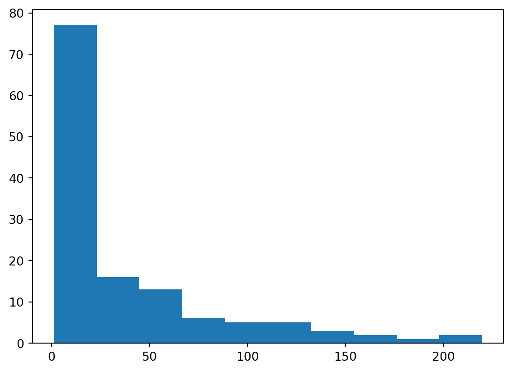

import pandas as pdSíntesis estadística
La síntesis estadística te proporciona las herramientas que necesitas para condensar conjuntos de datos masivos y revelar lo más destacado. En este capítulo explorarás la síntesis estadística, lo que incluye la media, la mediana y la desviación típica, y aprenderás a realizar una interpretación exacta. También desarrollarás tus competencias de pensamiento crítico, lo que te permitirá elegir la mejor síntesis estadística para tus datos.
Qué es la estadística?
Campo de la estadística: Es la práctica y studio de la recogida y análisis de datos.
Un resúmen estadístico: Un dato o resumen de algunos datos.
Tipos de estadística:
| Estadística Descriptiva | Estadística Inferencial |
|---|---|
|
|
Ejemplos:
|
Ejemplo:
|
Tipos de datos:
| Numérico (Cuantitativo) | Categórico (Cualitativo) |
|---|---|
|
|
|
|
Estadística descriptiva e inferencial
La estadística puede utilizarse para responder a muchos tipos de preguntas, pero saber identificar qué tipo de estadística se necesita es esencial para sacar conclusiones exactas. En este ejercicio, afinarás tus competencias identificando qué tipo se necesita para responder a cada pregunta.
| Descriptiva | Inferencial |
|---|---|
|
|
|
|
Clasificación de los tipos de datos
En el vídeo, aprendiste sobre dos tipos principales de datos: numéricos y categóricos. Las variables numéricas pueden clasificarse como discretas o continuas, y las variables categóricas, como nominales u ordinales. Estas características de una variable determinan qué formas de resumir tus datos funcionarán mejor.
| Numérica continua | Numérica discreta | Categórica |
|---|---|---|
| Temperatura del aire | Número de artículos en stock | Código postal |
| Kilovatios de electricidad consumidos | Número de cursos de Datacamp realizados | Marca de un producto |
Medidas de tendencia central
Media: Funciona mejor para datos simétricos.
Mediana: Funciona mejor para datos sesgados a izquierda y derecha.
Moda: Principalmente para datos categóricos.
Media y mediana
En este capítulo, trabajarás con el conjunto de datos food_consumption del 2018 Food Carbon Footprint Index, de nu3. El conjunto de datos food_consumption contiene el número de kilogramos de alimentos consumidos por persona y año en cada country y categoría de alimentos (consumption), y su huella de carbono (co2_emissions) medida en kilogramos de dióxido de carbono, o CO2.
En este ejercicio, calcularás medidas de tendencia central para comparar el consumo de alimentos en US y Bélgica utilizando tus competencias en pandas y numpy.
food_consumption = pd.read_csv('../datasets/food_consumption.csv')
print(food_consumption.head()) Unnamed: 0 country food_category consumption co2_emission
0 1 Argentina pork 10.51 37.20
1 2 Argentina poultry 38.66 41.53
2 3 Argentina beef 55.48 1712.00
3 4 Argentina lamb_goat 1.56 54.63
4 5 Argentina fish 4.36 6.96Instrucciones:
Importa las librerías pandas y numpy.
Subdivide food_consumption para obtener las filas en las que el country es’USA’
Calcula la media del consumption de alimentos en el DataFrame usa_consumption.
Calcula la mediana del consumption de alimentos en el DataFrame usa_consumption.
# Import numpy with alias np
import numpy as np
# Subset country for USA: usa_consumption
usa_consumption = food_consumption[food_consumption['country'] == 'USA']
# Calculate mean consumption in USA
print(np.mean(usa_consumption['consumption']))
# Calculate median consumption in USA
print(np.median(usa_consumption['consumption']))44.650000000000006
14.58Los cálculos muestran que la media y la mediana del consumo en los Estados Unidos son bastante diferentes.
Media frente a mediana
En el vídeo has aprendido que la media es la suma de todos los puntos de datos dividida entre el número total de puntos de datos, y que la mediana es el valor central del conjunto de datos, donde el 50 % de los datos son menores que la mediana y el 50 % de los datos son mayores que la mediana. En este ejercicio, compararás estas dos medidas de tendencia central.
Instrucciones:
Importa la librería
matplotlib.pyplotcon el aliasplt.Subdivide food_consumption para obtener las filas en las que el
food_categoryesrice.Crea un histograma de
co2_emissionsen el DataFramerice_consumptiony muestra el gráfico.
# Import matplotlib.pyplot with alias plt
import matplotlib.pyplot as plt# Subset for food_category equals rice
rice_consumption = food_consumption[food_consumption['food_category'] == 'rice']
print(rice_consumption.head()) Unnamed: 0 country food_category consumption co2_emission
8 9 Argentina rice 8.77 11.22
19 20 Australia rice 11.03 14.12
30 31 Albania rice 7.78 9.96
41 42 Iceland rice 3.89 4.98
52 53 New Zealand rice 9.16 11.72# Histogram of co2_emissions for rice and show plot
plt.hist(rice_consumption['co2_emission'])
plt.show()
- Pregunta
Echa un vistazo al histograma que acabas de crear de las emisiones de CO2 de los distintos países para el arroz. Cuál de los siguientes términos describe mejor la forma de los datos?
Respuestas posibles
- Utiliza
.agg()para calcular la media y la mediana deco2_emissionspara el arroz.
# Subset for food_category equals rice
rice_consumption = food_consumption[food_consumption['food_category'] == 'rice']
print(rice_consumption) Unnamed: 0 country food_category consumption co2_emission
8 9 Argentina rice 8.77 11.22
19 20 Australia rice 11.03 14.12
30 31 Albania rice 7.78 9.96
41 42 Iceland rice 3.89 4.98
52 53 New Zealand rice 9.16 11.72
... ... ... ... ... ...
1383 1384 Sierra Leone rice 103.30 132.19
1394 1395 Sri Lanka rice 109.72 140.41
1405 1406 Indonesia rice 134.62 172.27
1416 1417 Liberia rice 94.75 121.25
1427 1428 Bangladesh rice 171.73 219.76
[130 rows x 5 columns]# Calculate mean and median of co2_emission with .agg()
print(rice_consumption['co2_emission'].agg(['mean', 'median']))mean 37.591615
median 15.200000
Name: co2_emission, dtype: float64- Pregunta
Dado el sesgo de estos datos, qué medida de tendencia central resume mejor los kilogramos de emisiones de CO2 por persona y año para el arroz?
Respuestas posibles
Medidas de dispersión
Describe lo separado o juntos que se encuentran los grupos de datos.
Varianza:
Mide la distancia media de cada punto de datos a la media de los datos. Se puede calcular usando np.var().
Desviación estándar
Se calcula tomando la raíz cuadrada de la varianza. Se puede calcular usando np.sd().
Desviación estándar absoluto
Toma el valor absoluto de las distancias a la media y luego toma la media de las diferencias.
Desviación estandar vs desviación media absoluta
- En la desviación estandar los cuadrados de las distancias penaliza las largas distancias más que las cortas.
- En la desviación media absoluta todas las distancias se penalizar de forma equitativa.